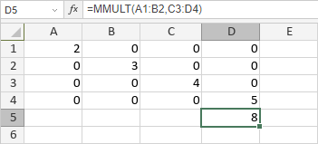

MMULT funkcija
MMULT funkcija je jedna od matematičkih i trigonometrijskih funkcija. Koristi se za vraćanje proizvoda matrica dva niza i prikazuje prvu vrednost dobijene niza brojeva.
Sintaksa
MMULT(array1, array2)
MMULT funkcija ima sledeće argumente:
| Argument | Opis |
|---|---|
| array1, array2 | Niz brojeva. |
Napomene
Ako neka od ćelija u nizu sadrži prazne ili nenumeričke vrednosti, funkcija će vratiti #N/A grešku.
Ako broj kolona u array1 nije isti kao broj redova u array2, funkcija će vratiti #VALUE! grešku.
Napomena: ovo je niz formula. Za više informacija, pročitajte članak Umetanje niz formula.
Kako primeniti MMULT funkciju.
Primeri
Slika ispod prikazuje rezultat koji vraća MMULT funkcija.
